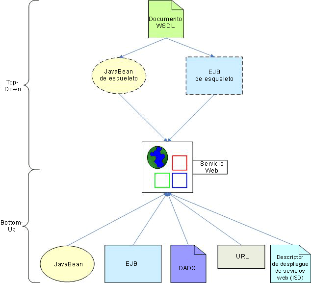

Introducción
RAD 6.0 proporciona un extenso conjunto de herramientas para dar soporte al descubrimiento, creación, comprobación,
desarrollo y publicación de servicios Web. Éstos permiten el desarrollo de servicios web basados en los estándares más
actuales y dan soporte al despliegue hacia varios entornos en tiempo de ejecución. Las herramientas también
proporcionan asistentes para dar soporte y facilitar los distintos métodos de desarrollo. Este documento describe los
distintos métodos proporcionados por RAD 6.0 para desarrollar un servicio web y discute las distintas consideraciones
en cuanto a desarrollo en relación con las opciones de despliegue de servicios web y nivel de interoperatividad.
Métodos de desarrollo
Los asistentes de servicios web de RAD 6.0 le permiten crear un servicio web utilizando métodos que van de lo general a
lo detallado o viceversa. El método top-down, que va de lo general a lo detallado, le permite empezar con un documento
de Web Services Description Language (WSDL) y generar un bean de Java o un Enterprise JavaBean (EJB) de esqueleto que
pueden utilizarse para crear un servicio web. El método bottom-up, que va de lo detallado a lo general, le permite
crear un servicio web a partir de un bean de Java que ya exista, un EJB, un archivo DADX (Document Access Definition
Extender), un URL o un archivo ISD (Web service Deployment Descriptor). La Figura 1 describe la creación de servicios
web proporcionada por RAD 6.0.

Figura 1 - Métodos de creación de servicios web RAD 6.0
Durante la creación de un servicio Web, el asistente le permite opcionalmente:
-
Comprobar el servicio web tan pronto como sea creado utilizando la herramienta Explorador de servicios web.
-
Generar un proxy de cliente que puede utilizar en aplicaciones de cliente para acceder a l servicio web.
-
Comprobar un proxy de cliente utilizando la herramienta UTC (Cliente de prueba universal) o una aplicación JSP de
ejemplo que genera la herramienta.
-
Publicar el servicio web en una registro de UDDI utilizando la herramienta Explorador servicios web.
Los servicios web desarrollados en RAD 6.0 tienen que crearse en un proyecto web o EJB y contienen productos que
cumplen con los estándares siguientes:
-
Web Services Definition Language (WSDL) versión 1.1
-
Simple Object Access Protocol (SOAP) versión 1.1 (incluidas las implementaciones Apache SOAP 2.2 y 2.3)
-
Universal Description, Discovery and Integration (UDDI) versión 2.0
-
Web Services Inspection Language (WSIL) versión 1.0
-
Java API for XML-based Remote Procedure Call (JAX-RPC), también conocido como JSR-101
-
JSR-109 y JSR-921(Implementación de servicios web empresariales)
-
Perfil básico de interoperatividad de servicios web (WS-I) 1.0 (conformidad opcional)
-
WS-Security
Para obtener más información sobre estos temas consulte Concepts: Web Services for J2EE.
Desarrollo Top-down
El desarrollo Top-down (de lo general a lo abstracto) le permite tomar la definición abstracta de un servicio web
contenida en un documento WSDL y generar una implementación concreta para el mismo. (Nota: RAD 6.0 también proporciona
un asistente para crear un documento WSDL). Se da soporte a las dos métodos siguientes:
-
Creación de un EJB de esqueleto a partir de un documento WSDL
De forma similar, este método le permite crear un EJB de sesión sin estado de esqueleto a partir de un
documento WSDL y exponerlo como servicio web. Los métodos en el EJB corresponden a las operaciones descritas en
el documento WSDL y contienen una implementación trivial que puede sustituir. Las consideraciones siguientes se
aplican a este método y a sus productos de trabajo generados:
-
Este método sólo se puede utilizar si selecciona IBM WebSphere v6 como entorno de tiempo de ejecución del
servicio web (consulte Dependencias de despliegue)
-
Puede especificar el URI de un documento WSDL, o, como alternativa, el de un documento WSIL o HTML que haga
referencia a un archivo WSDL como origen del servicio web.
-
El archivo WSDL debe contener un elemento de servicio. También puede generar opcionalmente un documento de
referencia WSDL estandarizada (WSIL) para el servicio web resultante.
-
El servicio web generado debe crearse en un proyecto EJB. Además, se crea un proyecto de direccionador para
habilitar el servicio web con el fin de recibir solicitudes sobre el transporte HTTP (Nota: El transporte
JMS no está soportado en este método). El proyecto de direccionador puede ser un proyecto web o EJB y no
puede ser el mismo proyecto que el que contiene el servicio web pero debe estar en el mismo archivo EAR.
Desarrollo Bottom-up
El propósito del desarrollo bottom-up (de lo detallado a lo general) es exponer un componente o recurso de la
aplicación existente como servicio web. A continuación se explican los diferentes métodos.
-
Creación de un servicio web a partir de un bean de Java
Este método le permite seleccionar un bean de Java existente y expone sus métodos como un servicio web. Los
productos de trabajo resultantes incluyen:
-
Archivo WSDL: Este archivo describe el servicio web y tiene una extensión de nombre de archivo .wsdl. Puede
escoger entre tres estilos de WSDL (Documento/Literal, RPC/Literal y RPC/Codificado). Para ver el impacto
en la interoperatividad de cada opción, consulte Conformidad con el perfil básico de WS-I.
-
Service Endpoint Interface (SEI): Esta interfaz Java define los métodos del servicio web. Su nombre de
archivo tiene un sufijo _SEI.
-
Descriptor de despliegue de servicios web: el archivo webservices.xml especifica los detalles de
implementación y despliegue del servicio web.
-
Archivos de correlación JAX-RPC: Estos archivos definen cómo se correlacionan los elementos Java de los
servicios web con el WSDL.
-
Creación de un servicio web a partir de un EJB
Puede exponer los métodos de un bean de sesión sin estado como servicio web. Los productos de trabajo generados
son similares a los generados para un bean de Java e incluyen un archivo WSDL, una SEI, un descriptor de
desarrollo de servicios web y archivos de correlación JAX-RPC. Las consideraciones siguientes se aplican a este
método y a sus productos de trabajo generados:
-
El servicio web generado debe crearse en un proyecto EJB.
-
Se debe crear un proyecto de direccionador para habilitar el servicio web y poder recibir solicitudes de
clientes. Si utiliza SOAP sobre HTTP como método de transporte, cree el proyecto de direccionador como
proyecto web. De no ser así, si el cliente utiliza SOAP sobre JMS, créelo como proyecto EJB (el
direccionador JMS está implementado como un Bean de mensaje en este caso). Los proyectos de direccionador y
servicios web no pueden ser los mismos pero deben contenerse en el mismo archivo EAR.
-
Si utiliza el transporte SOAP sobre JMS, debe configurar un proveedor JMS en su servidor. Tampoco podrá
utilizar el Explorador de servicios web para comprobar su servicio web.
-
Creación de un servicio web a partir de un archivo DADX
Este método le permite recortar datos de DB2 a los que se accede a través de DB2 XML Extender o sentencias SQL
regulares dentro de un servicio web. Los datos a los que se accede a través de DB2 XML Extender consisten en
documentos XML correlacionados a una base de datos DB2 mediante un documento Document Access Definition (DAD).
El punto de partida del método es un archivo DADX que especifica cómo crear un servicio web utilizando el
conjunto de operaciones definidas por sentencias SQL regulares o en un archivo DAD. Los productos de trabajo
generados incluyen un archivo WSDL, una SEI, un descriptor de desarrollo de servicios web y archivos de
correlación JAX-RPC. Las consideraciones siguientes se aplican a este método y a sus productos de trabajo
generados:
-
Este método sólo se puede utilizar si selecciona IBM SOAP como entorno en tiempo de ejecución del servicio
web (consulte Dependencias de despliegue).
-
Opcionalmente, puede generar un archivo DADX a partir de una combinación de una o varias sentencias SQL,
procedimientos almacenados o archivos DAD .
-
El archivo DADX ha de estar contenido en un grupo DADX que defina la conexión JDBC y otras informaciones
compartidas entre los archivos DADX del grupo.
-
El servicio web generado debe crearse en un proyecto Web.
-
Creación de un servicio web a partir de un URL
A partir de su URL, puede crear un servicio web que acceda directamente a un servlet que se ejecute en un
servidor remoto. El asistente le permite describir la interfaz de servlet en términos de puertos, operaciones y
parámetros y genera un documento WSDL que describe el servicio web resultante. Las consideraciones siguientes
se aplican a este método y a sus productos de trabajo generados:
-
Este método sólo se puede utilizar si selecciona IBM SOAP como entorno en tiempo de ejecución del servicio
web (consulte Dependencias de despliegue).
-
Normalmente, el puerto corresponde a la parte del nombre de dominio/host del URL, la operación corresponde
a la parte del contexto de servlet y URI, y los parámetros corresponden a los parámetros de entrada del
servlet.
-
El servicio web generado debe crearse en un proyecto Web.
-
No existe un servicio web para desplegar porque ya ha sido implementado por el URL activo.
-
Creación de un servicio web a partir de un archivo de descriptor de despliegue (ISD)
Cuando se despliega un servicio web, sus atributos de configuración y tiempo de ejecución se definen en un
archivo de descriptor de despliegue ISD. Este archivo proporciona información sobre el servicio que debería
ponerse a disposición de clientes mediante el entorno de ejecución SOAP, por ejemplo, URI, métodos, clases de
implementación (JavaBeans y EJB), serializadores y deserializadores. Puede crear un servicio web a partir de un
archivo ISD utilizando esta información disponible. Esto le permite recortar implementaciones de servicios web
existentes y volverlas a desplegar como nuevos servicios web sin tener que volver a especificar su información
de configuración y correlación. Las consideraciones siguientes se aplican a este método y a sus productos de
trabajo generados:
-
Este método sólo se puede utilizar si selecciona IBM SOAP como entorno en tiempo de ejecución del servicio
web (consulte Dependencias de despliegue).
-
El servicio web generado debe crearse en un proyecto Web.
Directrices de desarrollo
Las secciones siguientes tratan sobre consideraciones importantes relacionadas con el desarrollo de un servicio web en
RAD 6.0. Describen las opciones de desarrollo disponibles basadas en el despliegue y los requisitos de conformidad con
WS-I de su servicio web.
Dependencias de despliegue
Los métodos (top-down y bottom-up) disponibles para crear un servicio web dependen del entorno de tiempo de ejecución
que elija para desplegar. RAD 6.0 da soporte a los entornos de tiempo de ejecución de servicios web siguientes:
-
IBM WebSphere v6
Este es el entorno de tiempo de ejecución de los servicios web predeterminados en RAD 6.0 y el recomendado para
uso productivo. Soporta un protocolo de transporte JMS y HTTP, permitiendo que los servidores y clientes de
servicios web se comuniquen vía conexiones HTTP o vía colas y temas JMS. Tenga en cuenta que un servicio web
puede ser implementado como EJB si es accesible a través del transporte JMS.
-
IBM SOAP
El entorno de tiempo de ejecución IBM SOAP da soporte a los protocolos Apache SOAP versión 2.2 y 2.3 (consulte
Recursos) y era el único entorno de tiempo de ejecución de servicios web soportado en WebSphere Studio versión
5.0 y anterior. Sólo debe utilizarse por motivos de compatibilidad con versiones anteriores.
-
Apache Axis 1.0
Este entorno de tiempo de ejecución da soporte a la implementación SOAP de Apache Axis versión 1.0 (consulte
Recursos). No está recomendado para la producción debido a problemas de interoperatividad entre servicios web
potenciales (consulte la sección Problemas de uso del entorno de tiempo de ejecución Apache Axis 1.0 en los
Contenidos de ayuda de la herramienta).
Se recomienda que elija el entorno de tiempo de ejecución IBM WebSphere v5 a no ser que su destino de despliegue
requiera específicamente que utilice un SOAP Apache o una implementación Apache Axis (de ser así, tenga cuidado con las
limitaciones asociadas descritas en la Limitaciones de la herramienta del contenido de ayuda de los servicios web). La
Tabla 1 resume las propuestas de creación de servicios web soportadas por RAD 6.0 para cada entorno de tiempo de
ejecución.
|
Enfoque
|
IBM WebSphere v6
|
IBM SOAP
|
Apache Axis 1.0
|
|
Creación de un JavaBean de esqueleto a partir de un documento WSDL
|
Sí
|
Sí
|
Sí
|
|
Creación de un EJB de esqueleto a partir de un documento WSDL
|
Sí
|
No
|
No
|
|
Creación de un servicio web partir de un JavaBean
|
Sí
|
Sí
|
Sí
|
|
Creación de un servicio web a partir de un EJB
|
Sí
|
Sí
|
No
|
|
Creación de un servicio web a partir de un DADX
|
No
|
Sí
|
No
|
|
Creación de un servicio web a partir de un URL
|
No
|
Sí
|
No
|
|
Creación de un servicio web a partir de un descriptor de despliegue de servicios web (ISD)
|
No
|
Sí
|
No
|
Tabla 1 - Propuesta de creación de servicios web compatible con entorno de tiempo de ejecución
Conformidad con el perfil básico de WS-I
El perfil básico de interoperatividad de servicios web (WS-I) es un conjunto de requisitos publicados por la
organización de WS-I para promover la interoperatividad de servicios web entre plataformas, sistemas operativos y
lenguajes de programación. Define los requisitos de tráfico WSDL y de protocolo (SOAP/HTTP) que debe satisfacer un
servicio web para estar en conformidad con WS-I. RAD 6.0 incluye herramientas de validación que pueden utilizarse para
verificar la conformidad de los servicios web con los requisitos del perfil básico de WS-I 1.0. Puede establecer un
nivel de conformidad con WS-I (Solicitar, Sugerir o Ignorar (predeterminado)) para el espacio de trabajo o proyecto
antes de desarrollar un servicio web o ejecutar las herramientas de validación tras su desarrollo.
Es recomendable desarrollar servicios web en conformidad con el perfil básico de WS-I. Debe seguir las directrices
expuestas a continuación para asegurase de que lo están:
-
Utilice Documento/literal o RPC/literal para el estilo WSDL (RPC/codificado no es conforme con WS-I)
-
Utilice SOAP sobre HTTP como protocolos de transporte y mensajería (SOAP sobre JMS no es conforme con WS-I)
-
No utilice ninguna opción de seguridad para el servicio web (la firma digital XML y el cifrado XML no son conformes
con WS-I)
Consideraciones sobre el proxy cliente
-
Existen 2 tipos de proxies cliente que puede generar opcionalmente al crear un servicio web:
El bean de Java del proxy de cliente le permite invocar métodos de servicio web mediante llamadas a procedimientos
remotos. Sólo se puede crear en un proyecto web de cliente si se selecciona IBM SOAP o Apache Axis 1.0 para el
entorno de tiempo de ejecución cliente. De no ser así, para un entorno de tiempo de ejecución IBM WebSphere v6, se
puede crear en un proyecto Web, Java, EJB o de cliente de aplicación.
-
Funciones de servicios web definidas por el usuario
Esta opción le permite crear una función DB2 definida por el usuario (UDF) para cada método del servicio web que
desee invocar. Requiere que el paquete de UDF del consumidor de servicios web DB2 y el DB2 XML estén instalados en
la base de datos. La UDF se crea y se añade a la definición de base de datos con todos los productos relacionados
de trabajo del cliente almacenados en un proyecto web.
-
Seleccione un EAR diferente para el servicio web y el cliente del servicio web para reducir las posibilidades de
encontrar errores de tiempo de ejecución. Recuerde que se espera que un cliente sea una aplicación diferente que el
servicio web, y los servicios web no están concebidos para la comunicación entre aplicaciones.
Recursos
Para obtener información adicional sobre los siguientes temas, consulte el enlace correspondiente.
|